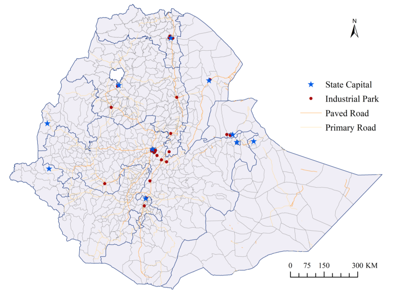
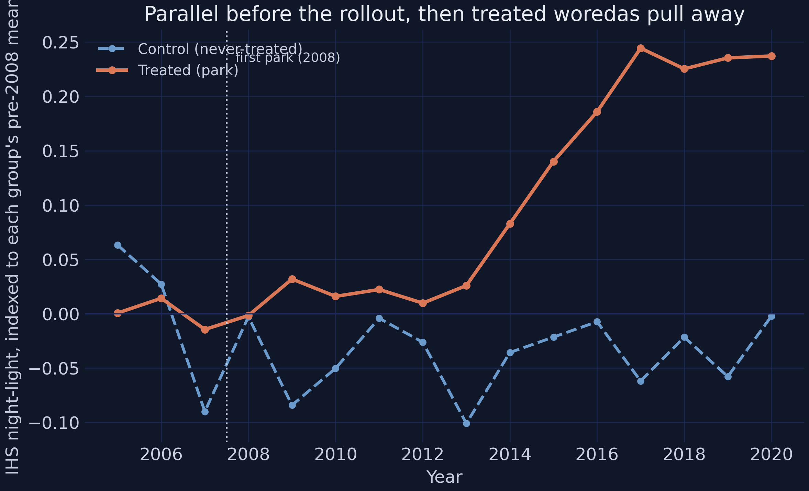
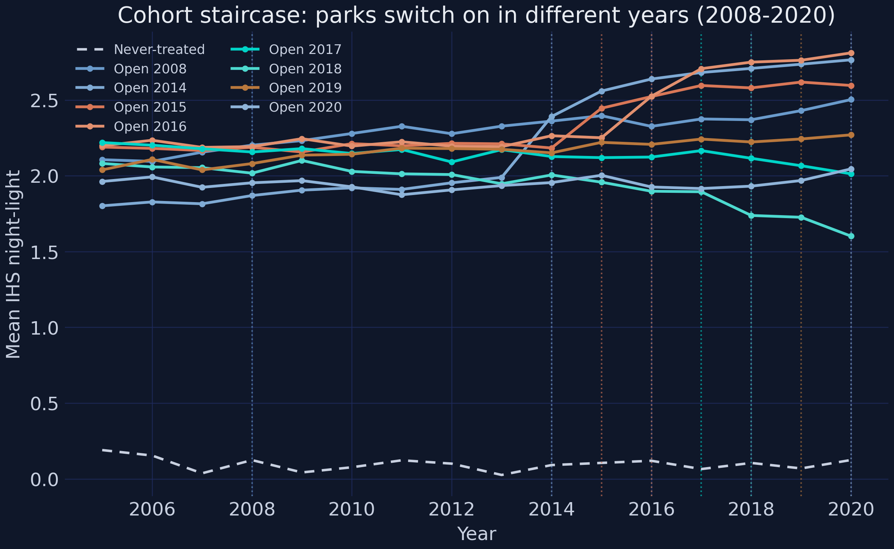
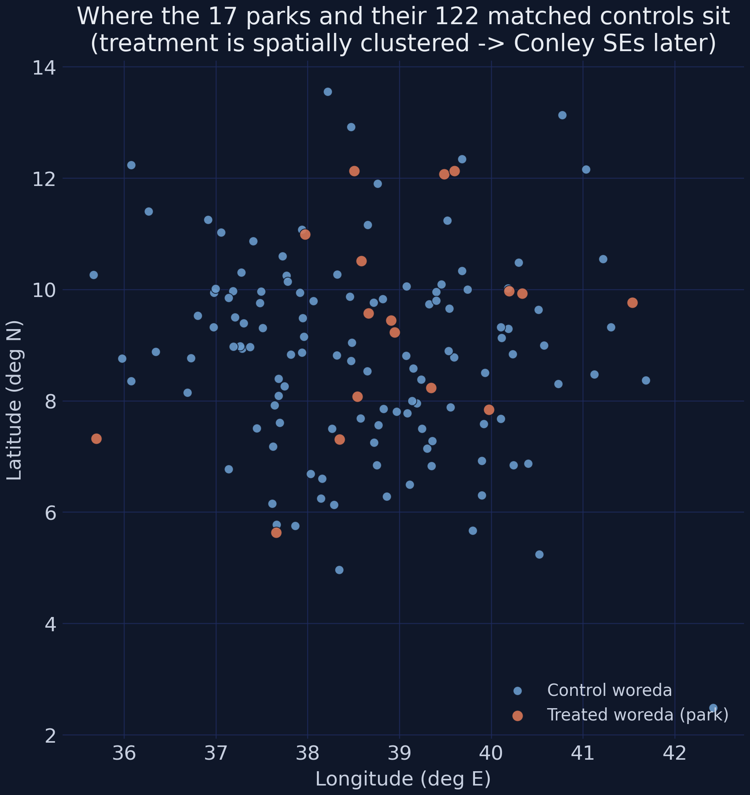
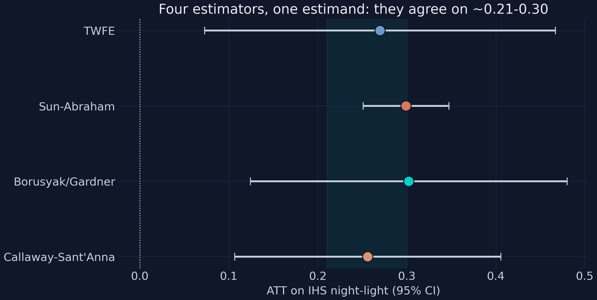
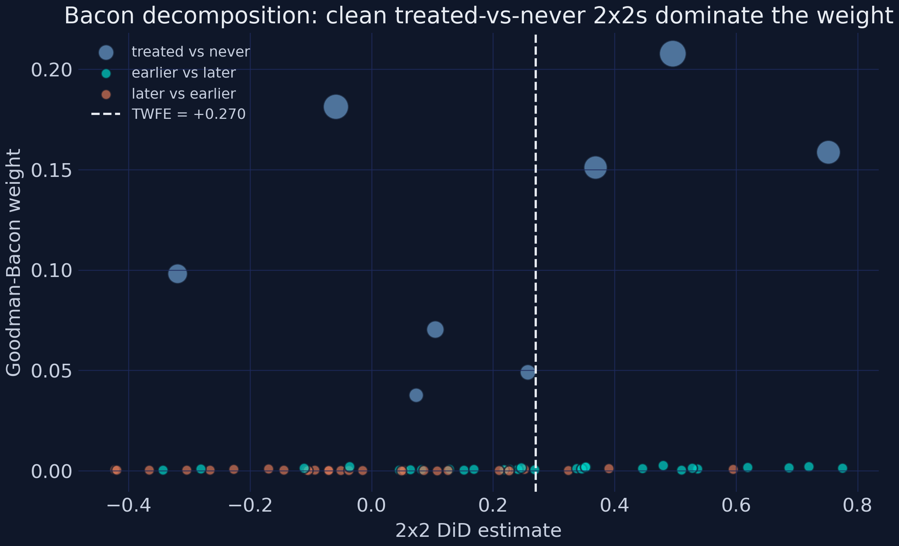
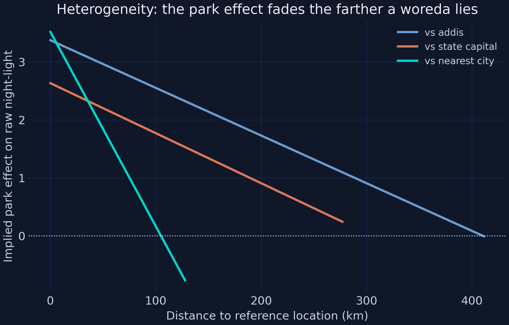
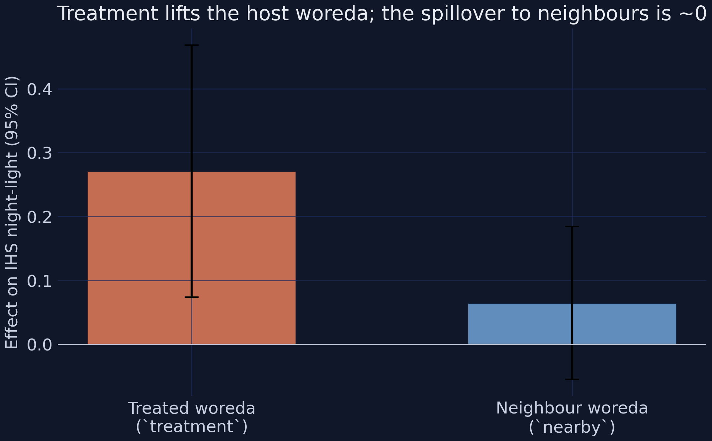
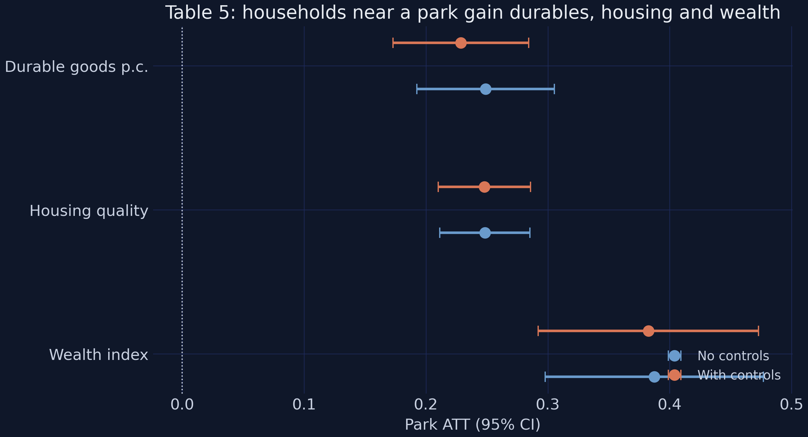
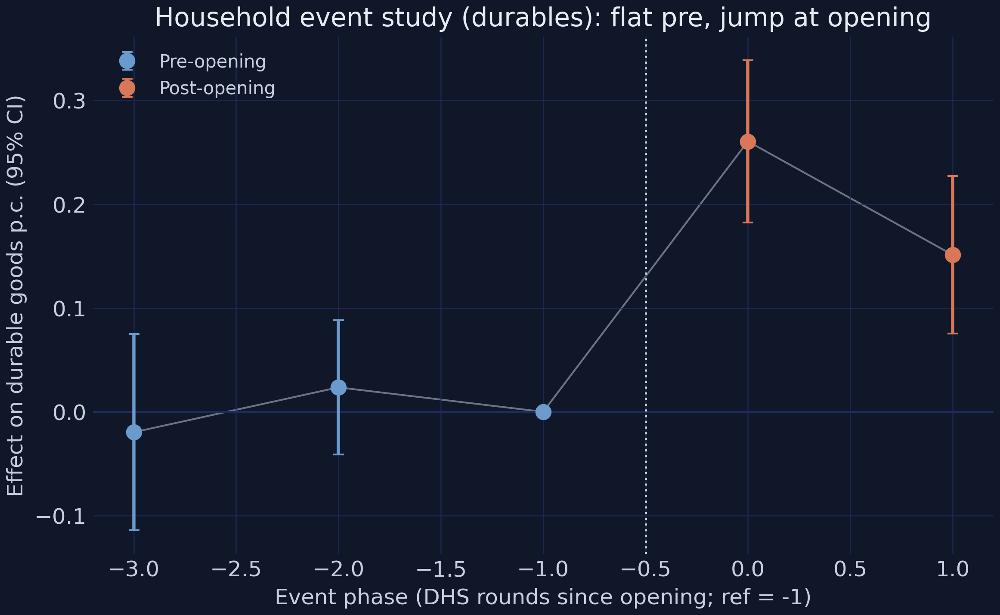

Governments spend billions fencing land for factories — does anything grow outside the fence?
An industrial park: serviced land, power, one-stop customs — rented to garment and leather factories. Ethiopia opened 20+ parks across 18 districts, 2008–2021.
The promise: jobs, a wage economy, a rural region pulled forward. The fear: a bright enclave behind a fence while the surrounding districts see nothing.
The question has two halves — whether, and for whom
A park could raise satellite luminosity yet leave living standards flat. It could add jobs on average — yet only for men.
So we ask both: do parks raise local activity, and who inside the district actually benefits?
The “for whom” turns out to carry the headline.
The government did not flip a coin — parks went where growth already was
Parks were sited near cities and roads — districts that were already growing faster. So a naive treated-vs-control gap confounds the park with the place.
We need a design that nets out pre-existing differences and handles a staggered rollout (parks opened in different years). That design is difference-in-differences.
A note on the data.Synthetic, calibrated data — tuned to Huang, Wang & Xu (2026)’s signs and magnitudes. Learn the methods, not facts about Ethiopia.
One estimand — the ATT — threads through everything
We want the Average Treatment effect on the Treated:
The effect on the 17 districts that got a park — not on a random district — identified under parallel trends.
Naive 2×2 — the cartoon
TWFE + event study — the workhorse
Sun-Abraham · Borusyak · Callaway-Sant’Anna — the insurance
Three data streams · one design · an escalating ladder of estimators.
Where the industrial parks are located

Ethiopia’s industrial parks (red dots), regional state capitals (blue stars), and the paved and primary road network.
Source: Appendix Figure A2 in Huang, Wang & Xu (2026). Real park locations from the paper; this tutorial uses synthetic calibrated data.
The Investigation
Act II
One policy, measured at three grains — satellite, household, individual
Satellite panel
139 woredas × 16 years (2,224 rows)
17 treated vs 122 matched controls
outcome: IHS nighttime light
DHS repeated cross-sections
13,200 households · 17,900 individuals
5 survey rounds, fresh respondents
no panel key → coarse event phases
Only 17 treated woredas — the recurring source of statistical caution.
Parallel before the rollout, then the treated woredas pull away

Baseline-normalized group-mean IHS light: treated (orange) and control (blue) overlap before 2008, then the treated series climbs while controls stay flat.
Staggered means there is no single “before” — each cohort has its own clock

Cohort staircase: each opening-year cohort turns up at its own park-opening date against a flat never-treated baseline.
1 woreda in 2008, then 2–3 per year across 2014–2020 — 17 in total.
Treatment is spatially clustered — which will matter for standard errors

Treatment map: the 17 treated woredas (orange) cluster spatially among the 122 matched controls (blue).
Near things are more related than distant things — their shocks are not independent draws.
A single “after” blends the slow start with the late surge — and understates the effect
The simplest estimate collapses the design at the median opening year and takes a difference of differences:
The teaching moment: staggered TWFE can use already-treated units as controls
The worry. Under staggered timing TWFE makes “forbidden comparisons” — already-treated woredas as controls for later-treated ones. When effects grow over time, those comparisons get negative weights and can bias, even flip, the estimate.
The fix.Sun-Abraham, Borusyak/Gardner, and Callaway-Sant’Anna only ever compare treated cohorts to clean (never- or not-yet-treated) controls. Each targets the same ATT — if they agree with TWFE, the bias is not biting.
Four estimators, one estimand — they agree within 0.046 IHS units

Four estimators compared: TWFE +0.270, Sun-Abraham +0.299, Borusyak/Gardner +0.302, Callaway-Sant’Anna +0.256 — all in a tight band, each significant at 1%.
Estimator
ATT
Sig.
TWFE
+0.2699
***
Sun-Abraham
+0.2991
***
Borusyak/Gardner
+0.3022
***
Callaway-Sant’Anna
+0.2561
***
And the Goodman-Bacon decomposition shows why — 95.4% clean weight

Goodman-Bacon decomposition: the clean treated-vs-never 2×2 comparisons carry nearly all the weight; the forbidden later-vs-earlier comparisons carry almost none.
Comparison type
Weight
Avg estimate
Treated vs never
95.42%
+0.2708
Earlier vs later
3.38%
+0.3370
Later vs earlier (forbidden)
1.21%
+0.0135
Where parks work: the effect fades with distance and is amplified by roads

Heterogeneity: the implied park effect fades the farther a woreda lies from Addis, its state capital, or the nearest city.
Distance to nearest city \(-0.0335\) (\(t = -4.90\)) · paved roads \(+0.6695\) (\(t = 2.08\)). Place is first-order.
Net-new activity, not displacement — no measurable spillover to neighbours

Spillover test: treatment lifts the host woreda strongly (+0.27), but the effect on control neighbours within 10 km is about zero.
nearby\(= +0.0648\) (\(t = 1.06\)), insignificant — so the host’s gain is net-new, and SUTVA holds.
Households near a park gain durables, housing, and wealth

Table 5 forest: households near a park gain durable goods, housing quality, and wealth, with or without controls.
Outcome
ATT (with controls)
Sig.
Durable goods p.c.
+0.2286 (~74%)
***
Housing quality
+0.2480
***
Wealth index
+0.3825 SD
***
Clean timing in the survey data too — flat pre-phases, then a jump

Household durables RCS event study: flat, insignificant pre-phases, then a jump at park opening (phase 0).
Honest inference inflates the SE 2.4× — but the headline survives
Treated woredas cluster in space, so a regional shock hits several at once — the naive SE assumes independence and is too small. The fix is a Conley spatial-HAC standard error; the point estimate never moves.
With-trends light ATT
Estimate
Naive HC0
Conley-HAC
\(t\)(HAC)
2008–2020
+0.2152
0.0329
0.0799
+2.69
Same +0.2152 in every column. The SE inflates 2.43× — yet still significant at 1%.
Four findings, one story: well-sited parks reshape activity — through women
Gender — null on average (+0.091), but female jobs +0.140 and the agency cascade
Triangulation across methods — not a single regression — is what makes the claim credible.
Two design lessons: follow the roads, and disaggregate by sex
The lesson is not “build parks everywhere.” It is that where and for whom decide whether place-based policy works.
Site selection — the effect fades −0.0335 per km to the nearest city and is amplified by paved roads. A park in a remote, poorly-connected woreda would do far less.
Inclusion — gains run through female-intensive sectors. An evaluation that measured only the average would conclude the parks failed on jobs and miss their largest social return.
The strongest objection — and the answer
Objection. The data are synthetic, there are only 17 treated woredas, and this is observational — point estimates fragile, identification on faith.
Response.
Synthetic data are calibrated to the paper — audited cell by cell in Section 13.
The caveats narrow the claim — they don’t overturn it.
Five numbers to remember
Number
Value
Light ATT (with trends)
+0.2152*** (~21%)
Four-estimator spread
0.046 IHS units
Clean Bacon weight
95.4%
Female employment ATT
+0.140*** (vs +0.091 ns)
Light SE: naive → Conley-HAC
0.0329 → 0.0799
And five lessons: let evolving effects evolve · triangulate estimators · disaggregate by sex · place is first-order · honest inference, honest caveats.
Well-sited parks reshape a local economy — and women’s lives — but only a sex-disaggregated look reveals it.